ท่าที่นิ่งในหนังสือมากว่า ๑๐๐ ปี
กลับมาเคลื่อนไหวอีกครั้ง
การถอดรหัสพันธุกรรมท่ารำโนราด้วยปัญญาประดิษฐ์
จากภาพขาวดำในตำราฟ้อนรำ พ.ศ. ๒๔๖๖ สู่วิดีโอท่ารำที่เคลื่อนไหวต่อเนื่อง
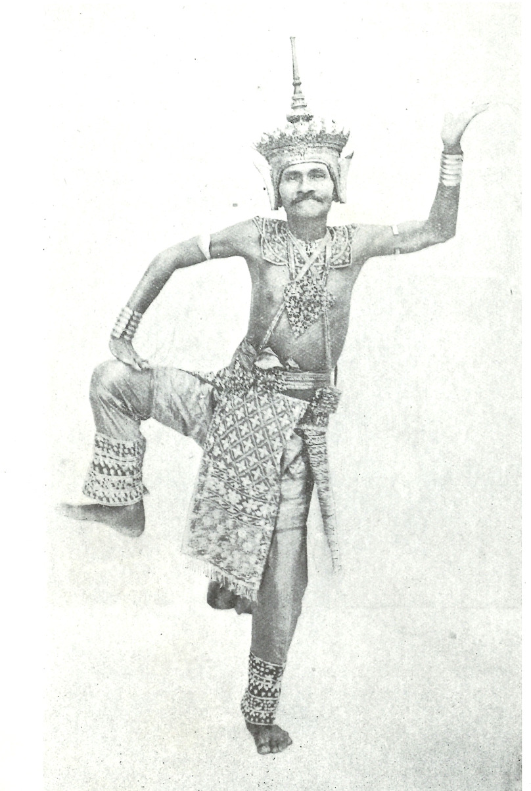
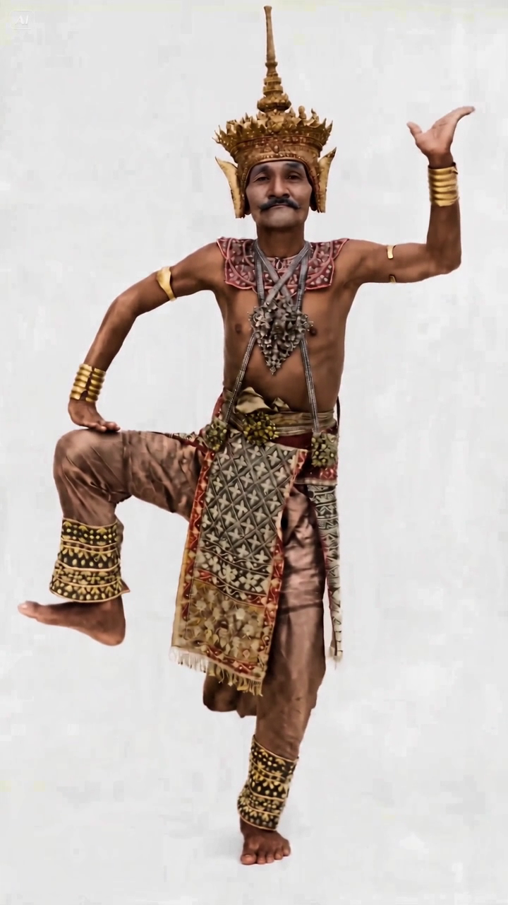
กระบวนการทั้งหมดที่เกิดขึ้น๕ ขั้นตอน จากหน้ากระดาษ สู่ร่างกายผู้รำ
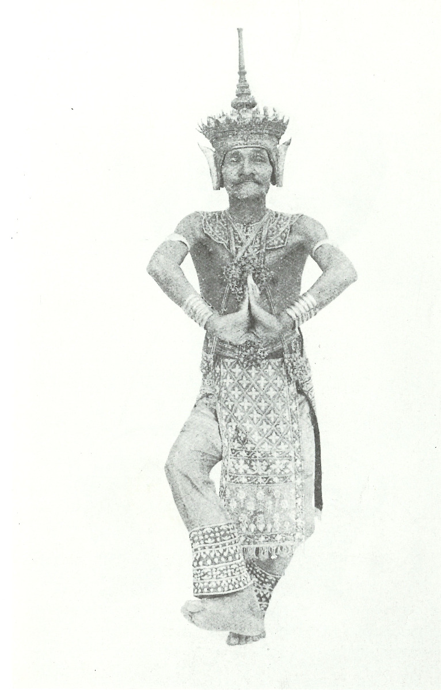
๑๑๒ ภาพสแกนภาพจากหนังสือภาพท่ารำขาวดำอายุกว่า ๑๐๐ ปี ในตำราฟ้อนรำ ฉบับหอพระสมุดวชิรญาณสำหรับพระนคร พ.ศ. ๒๔๖๖ ถูกสแกนเก็บไว้ทั้งชุด
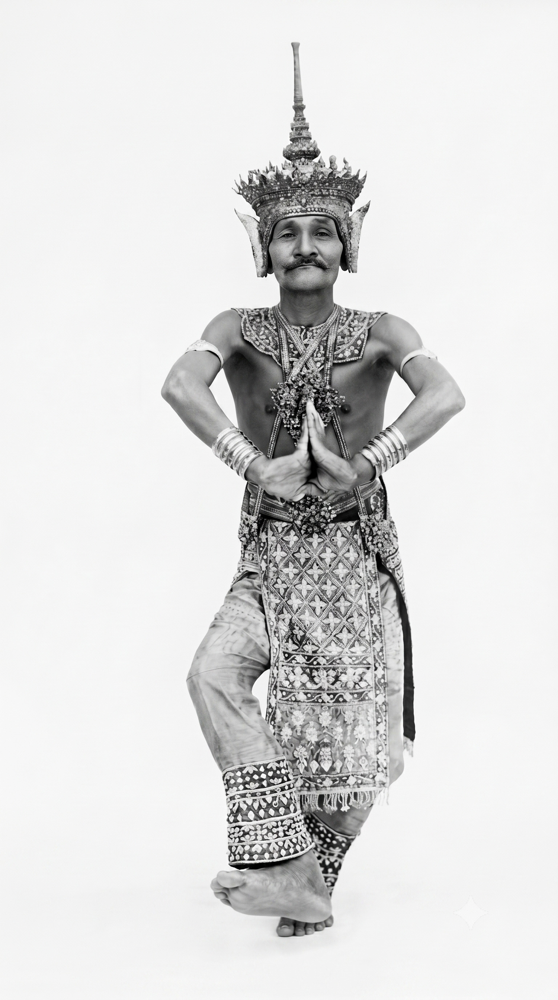
๒๑๑ ท่าฟื้นฟูภาพฟื้นฟูรายละเอียดเครื่องแต่งกาย เครื่องประดับ และท่ามือ กลับมาทีละท่า จนได้ภาพท่ารำที่คมชัดพอจะใช้งานต่อได้
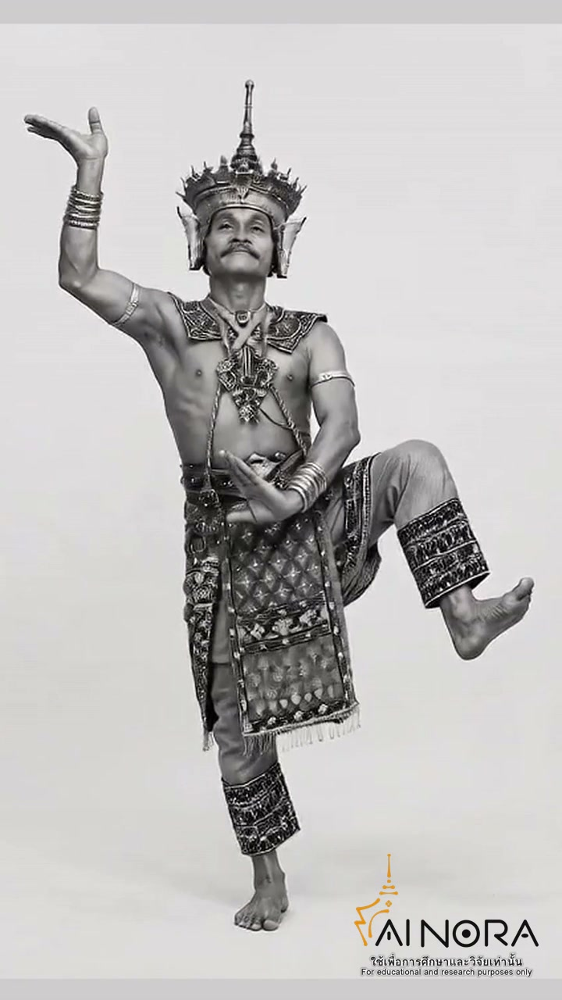
๓๒๒ คลิปสร้างการเคลื่อนไหวนำภาพท่ารำมาเรียงต่อกัน แล้วให้ปัญญาประดิษฐ์สร้างช่วงเชื่อมระหว่างท่า ภาพนิ่งจึงกลายเป็นการรำที่เคลื่อนไหวต่อเนื่อง
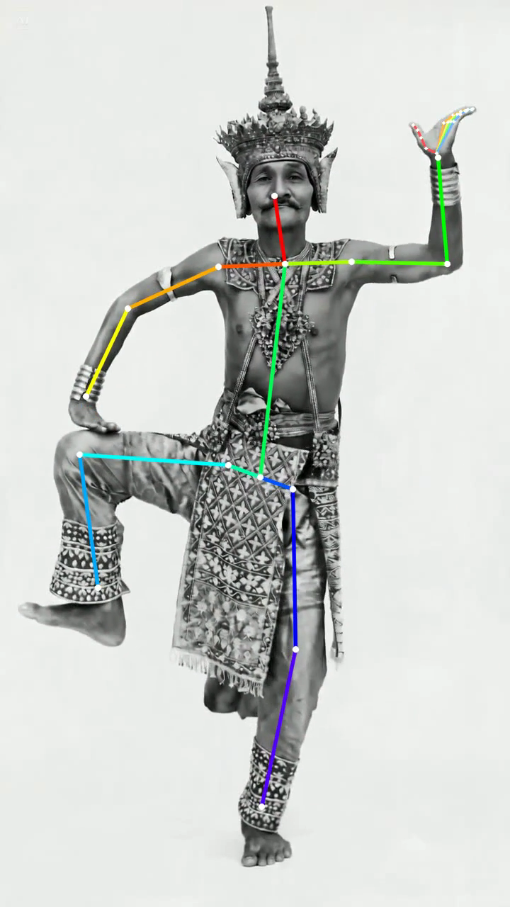
๔๑๒ คลิปถอดรหัสท่ารำคอมพิวเตอร์อ่านตำแหน่งข้อต่อของผู้รำจากวิดีโอทีละเฟรม ท่ารำจึงกลายเป็นข้อมูลที่วัดและสร้างซ้ำได้
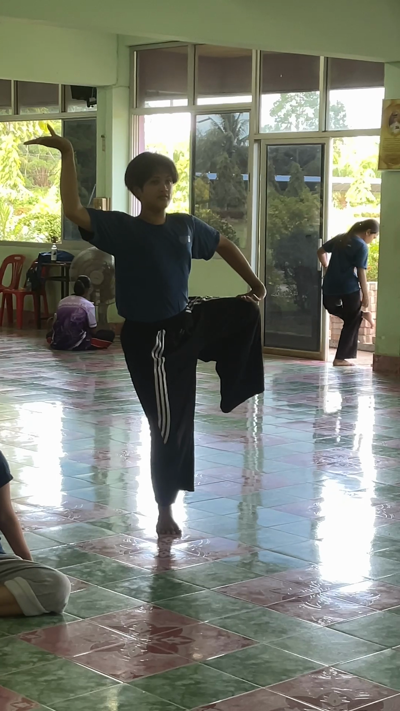
๕๖ คลิปถ่ายทอดสู่ผู้รำขั้นสุดท้ายคือการคืนท่ารำให้คน — นักศึกษาถ่ายทอดท่ารำผ่านการเคลื่อนไหวของร่างกายจริง
ท่าครูที่ฟื้นฟูแล้ว ๑๑ ท่าเรียงตามลำดับในตำราฟ้อนรำ พ.ศ. ๒๔๖๖
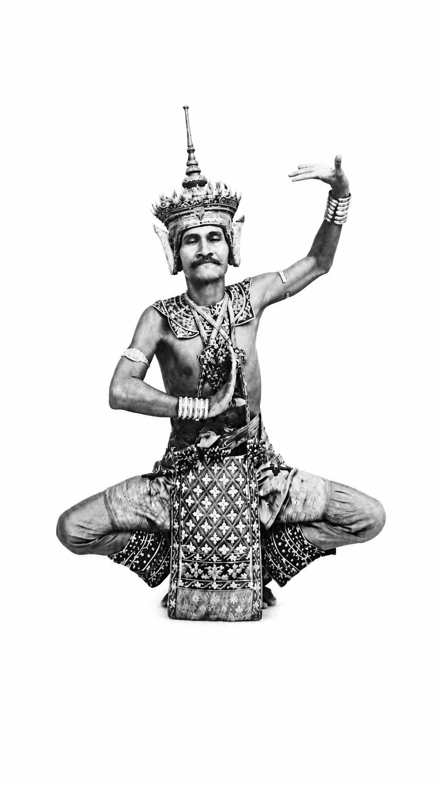
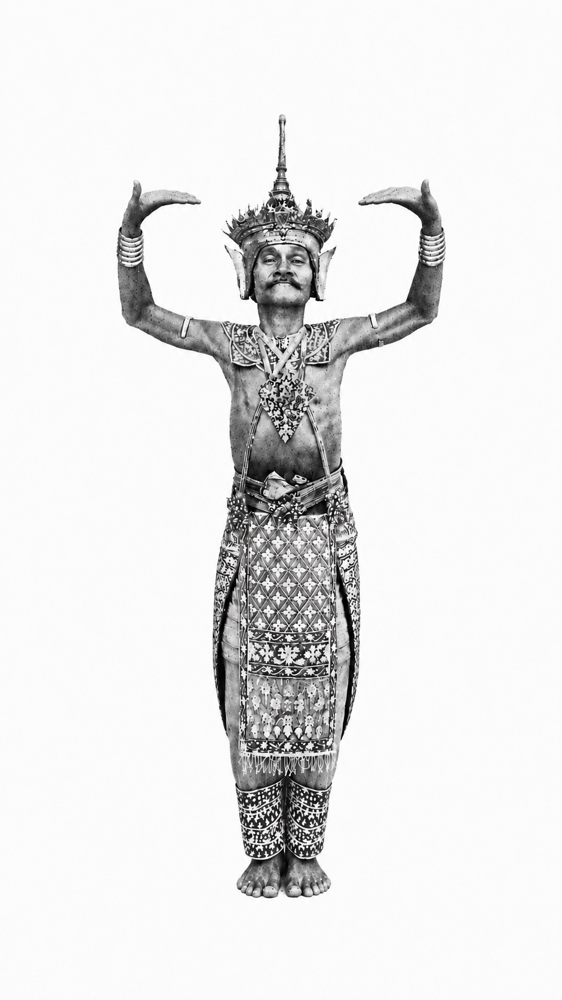
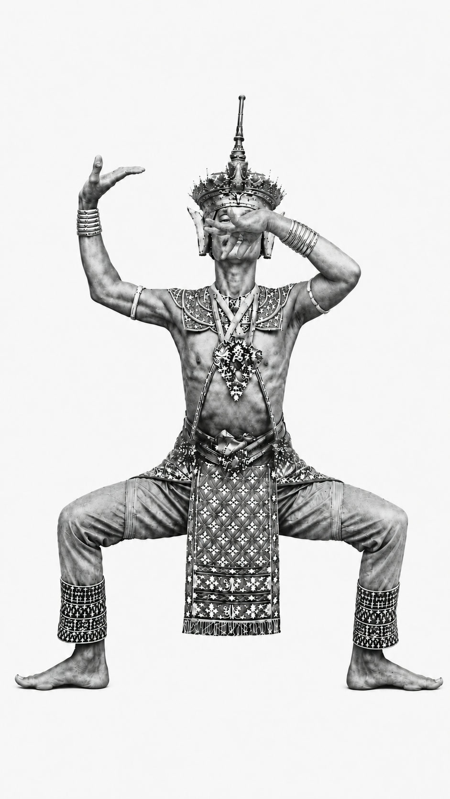
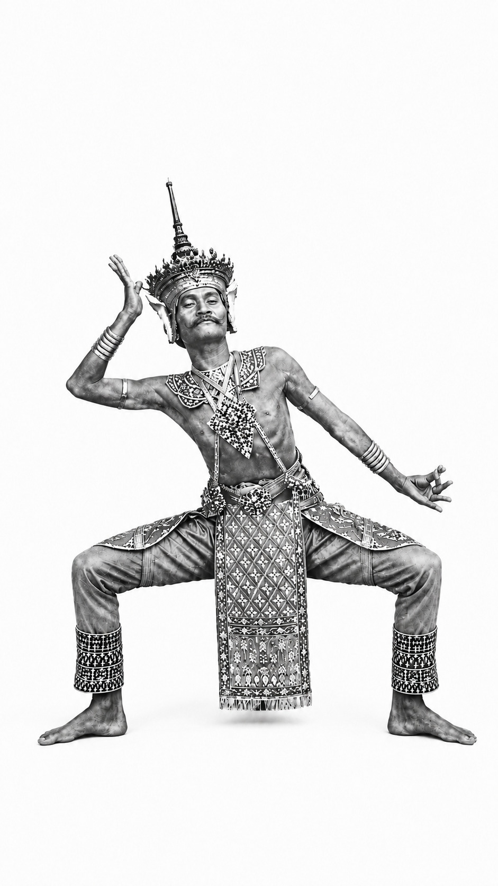
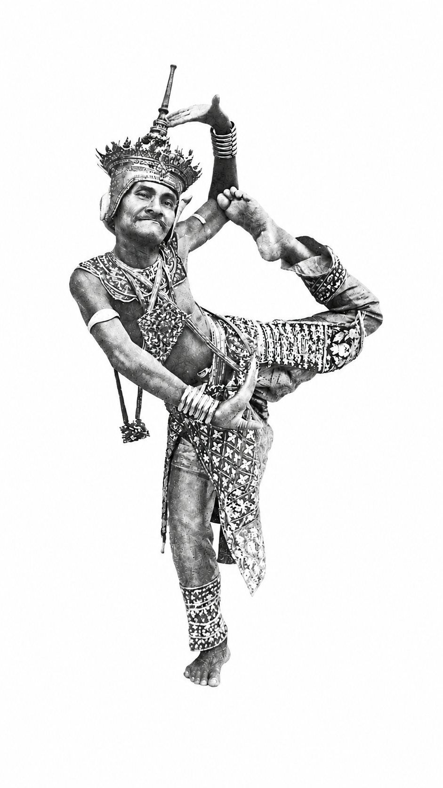
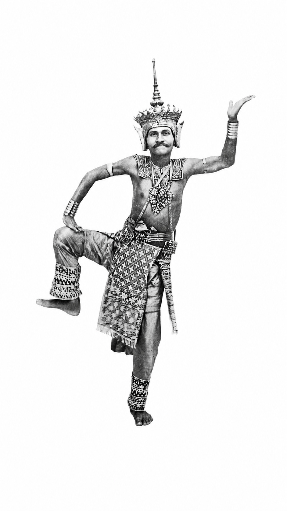
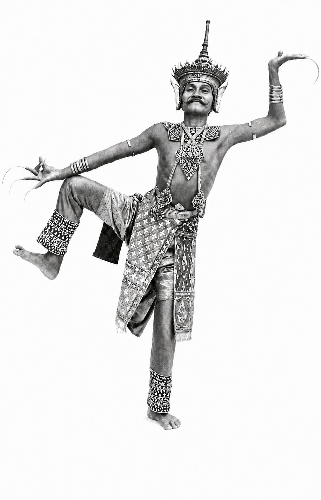
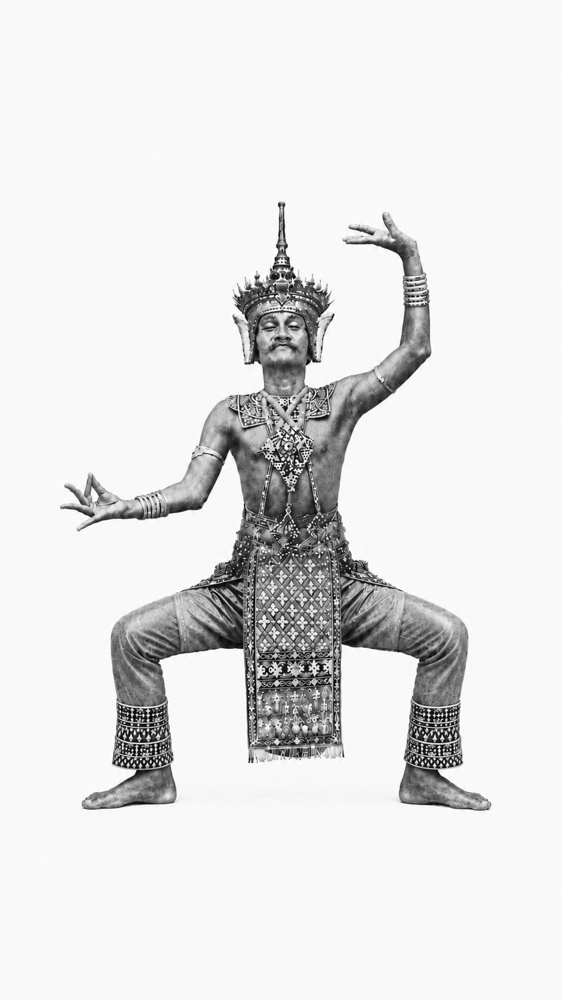
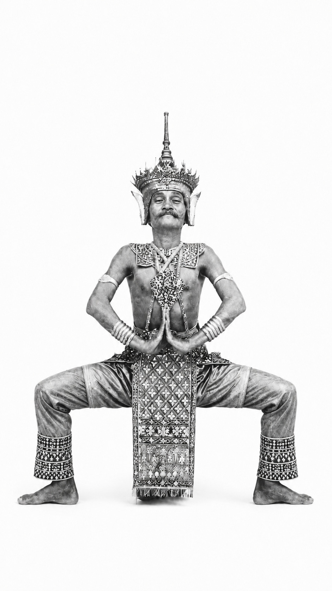
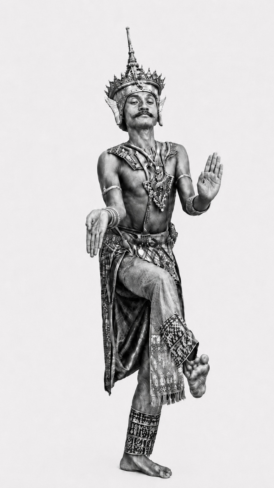
ที่ฟื้นฟูแล้ว
สร้างได้
ในกระบวนการ
ที่ฟื้นฟูเพิ่ม
ainora.psu.ac.th
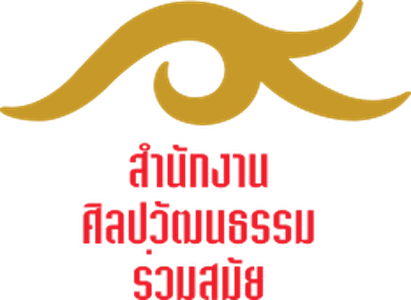
ดำเนินโครงการ
สำนักนวัตกรรมดิจิทัลและระบบอัจฉริยะ ม.สงขลานครินทร์คณะศิลปกรรมศาสตร์ มหาวิทยาลัยทักษิณ